Phantasia é um mundo de aventuras, e onde há aventureiros há oportunidades. Indivíduos se reúnem em grupos com interesses em comum para oferecer mercadorias, informações, suporte e até conforto e segurança.
E outros grupos?Como Mestre, você vai contar a história de Phantasia junto com os jogadores. Crie, altere, apague... O poder é seu para dar vida para essa pequena fundação que apresentamos aqui. Todas as lacunas deixadas em branco, localidades não mencionadas e as muitas pessoas que não estão aqui foram ignoradas propositalmente.
A Torre Maligna lá no mapa. O que você colocaria ali para ela ser tão maligna assim? Experimente criar algo que dê vida a ela!
Por que Maniel ficou tão quieto depois da guerra, aparentemente deixada de lado? O que existe no fundo do mar? O que é a Bocarra? O que os aliens estão fazendo aqui? Quem construiu as estruturas no deserto? O que há além d’O Portão? Por que ele precisa ser guardado? Para onde foram os ciclopes?
Essas e outras perguntas quem irá responder são vocês, aventureiros.
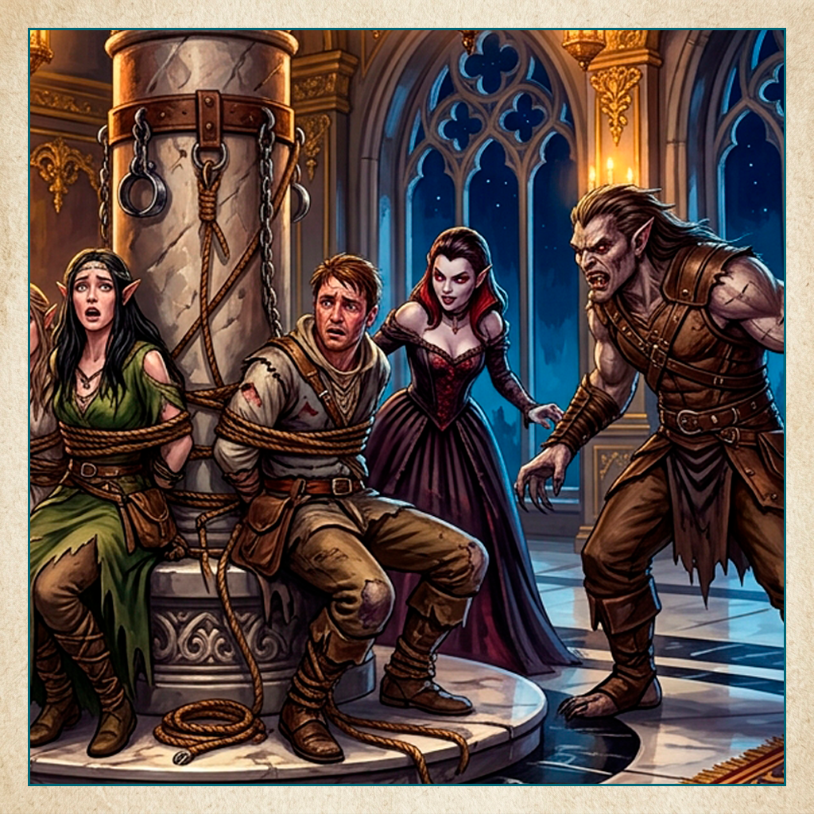
A Máscara
A Máscara não é exatamente uma organização, mas um pacto silencioso que une os vampiros de Phantasia sob uma única e rigorosa regra: permanecer ocultos. Mais do que um simples acordo, trata-se de uma tradição antiga, mantida com disciplina quase absoluta ao longo das eras, garantindo que sua existência permaneça envolta em dúvida, superstição e descrença.
Sob a proteção da Máscara, vampiros transitam entre mortais disfarçados, infiltrados em diferentes camadas da sociedade.
Quebrar a Máscara é considerado um dos maiores crimes entre eles, e as consequências são rápidas, severas e quase sempre fatais. Não se sabe ao certo quem garante o cumprimento desse pacto, mas há rumores de figuras antigas, talvez mais velhas que o próprio Reinado, que observam e intervêm quando necessário.
Para o povo de Phantasia, vampiros são apenas histórias sussurradas à noite; mas para aqueles poucos que conhecem a verdade, a Máscara é um lembrete inquietante de que há uma sociedade inteira vivendo nas sombras, vigilante e perigosamente próxima.
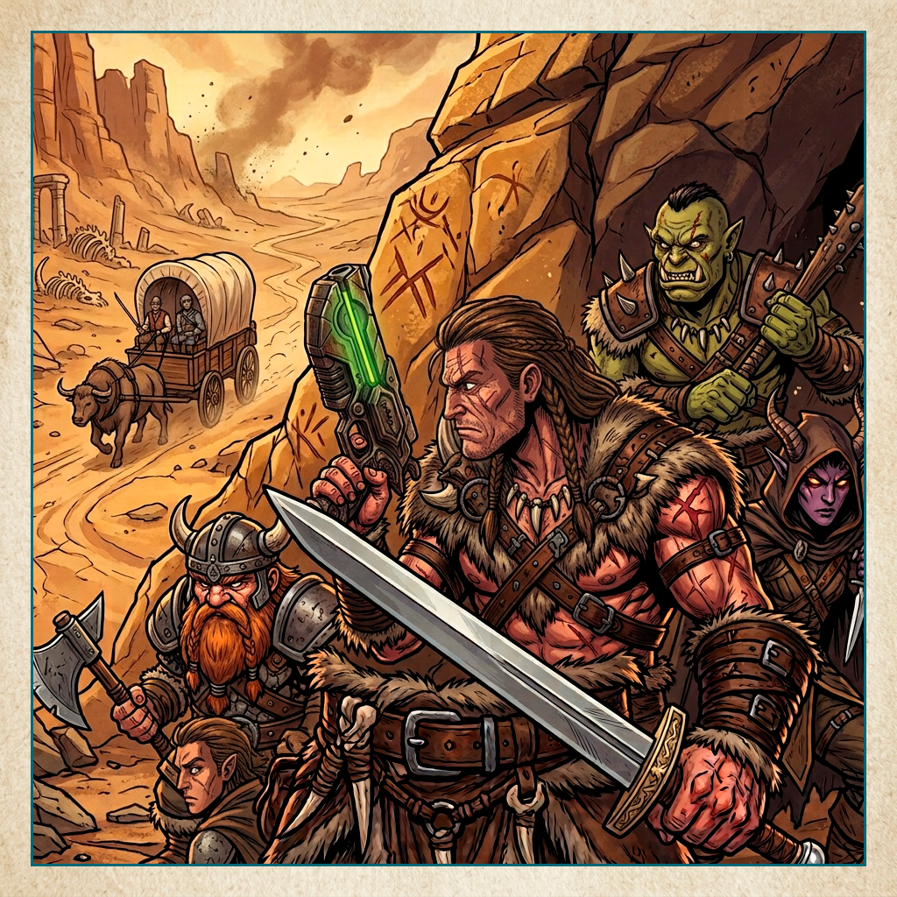
Bodes Brancos
O Bodes Brancos é considerado o grupo de saqueadores mais brutal das Terras Ruins (com certeza é o mais temido), uma força caótica que se alimenta da violência e da desolação que define a região. Eles atacam sem aviso, pilhando caravanas, assentamentos isolados e até outros bandos com ferocidade. Sua reputação é tão temida que muitos viajantes preferem enfrentar monstros e terrenos traiçoeiros do que cruzar território onde os Bodes Brancos foram avistados recentemente.
Apesar de sua natureza aparentemente selvagem, há indícios de uma organização interna mais complexa do que se imagina. Alguns relatos falam de um líder que não apenas comanda pela força, mas por uma espécie de devoção fanática. Ele é Garrik Ghan, O Colecionador.
Nas Terras Ruins, onde a sobrevivência já é um desafio constante, os Bodes Brancos são um sinal de que à margem do mundo civilizado o maior perigo não vem das feras do deserto, mas do que a humanidade se torna.
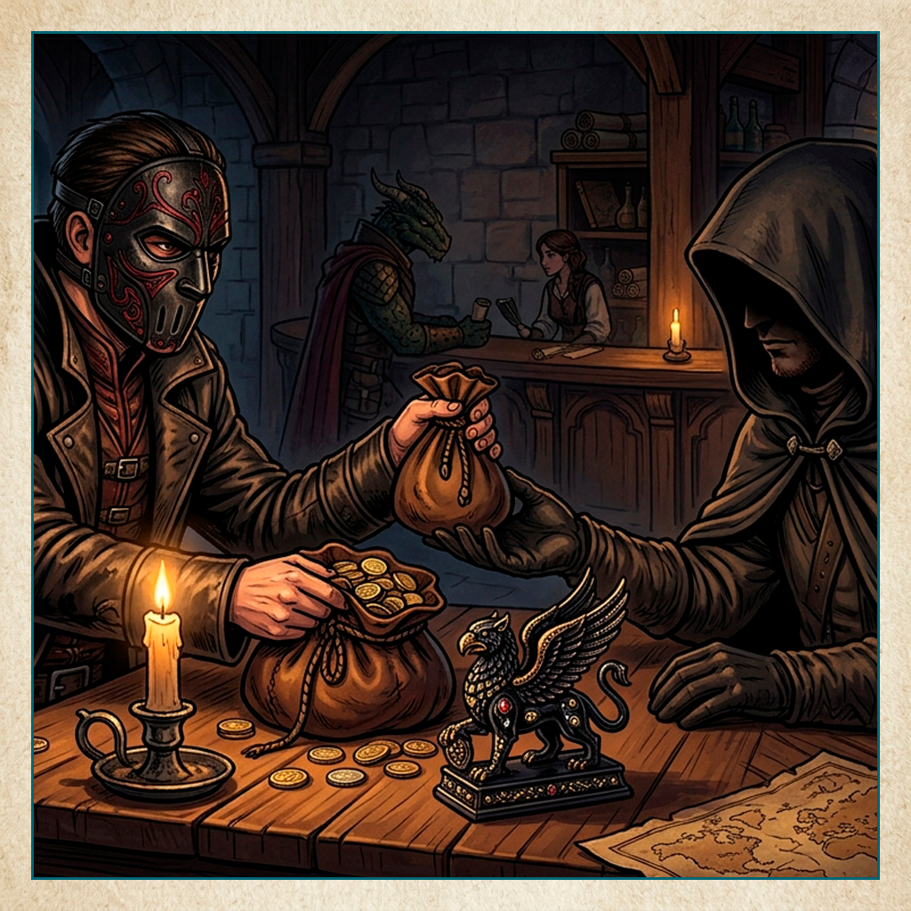
Círculo Vermelho
O Círculo Vermelho é uma rede difusa e quase invisível de ladrões que opera nas sombras de Phantasia, sem uma estrutura tradicional ou liderança central clara. Seus membros raramente se conhecem ou trabalham juntos diretamente, o que torna o grupo difícil de rastrear e ainda mais difícil de desmantelar.
Tudo gira em torno das chamadas “Chaves”, intermediários misteriosos que conectam contratantes a executores, organizando roubos, infiltrações e outros serviços ilícitos com precisão quase impecável. Cada operação é isolada, garantindo que, caso algo dê errado, o impacto não se espalhe pela organização como um todo.
Essa fragmentação, porém, não significa desordem. Pelo contrário, o Círculo Vermelho segue regras tácitas rígidas, e quebrá-las pode resultar em consequências rápidas e severas. Há rumores de que as próprias Chaves respondem a uma autoridade ainda mais oculta, um conselho que mantém o equilíbrio interno. Para o mundo exterior, o Círculo é um mito perigoso; para quem sabe como encontrá-lo, é uma ferramenta poderosa, onde ouro compra silêncio, habilidade e resultados.
 Conselho de Phantasia
Conselho de Phantasia
O Conselho de Phantasia é o principal enclave político do continente, sendo órgão político, legislativo e judiciário do Reinado e reunindo representantes das diferentes espécies para garantir justiça, equidade e cooperação nas relações entre os povos e na criação das leis que regem Phantasia.
Cada governo de espécie escolhe internamente seu representante e o envia para uma embaixada no Reino dos Sábios. Ali, os conselheiros trabalham em conjunto com os representantes do Rei, debatendo tratados, conflitos territoriais, direitos das espécies e questões que possam afetar o equilíbrio de todo o continente.
Atualmente, o Conselho é composto por Alura, representante dos humanos; Carólin, dos elfos; Julian, dos goblins; Elisa, dos hobbits; Isis, das fadas; Safira, dos orcs; e Túrin, dos anões, além da rainha Jak'Ln, que participa como autoridade máxima do Reino dos Sábios.
Embora não possuam uma cadeira permanente, os chamados Povos Livres Miscigenados também podem ser ouvidos pelo Conselho. Esporadicamente, Gëra fala em nome dos Vândalos, enquanto Jonatas representa os Piratas. Suas presenças costumam trazer perspectivas diferentes e, não raramente, discussões acaloradas para uma instituição acostumada às formalidades diplomáticas.
Mais do que um espaço de decisões políticas, o Conselho simboliza a tentativa de manter Phantasia unida apesar das diferenças entre seus povos. Nem todos concordam, mas todos têm uma cadeira à mesa.
Suas decisões moldam leis, tratados e ações que afetam desde grandes cidades até as regiões mais remotas, funcionando como um espaço de diplomacia.
Embora possua considerável autonomia, o Conselho atua sob a presença direta da coroa, sendo os próprios rei e rainha figuras ativas em suas deliberações.
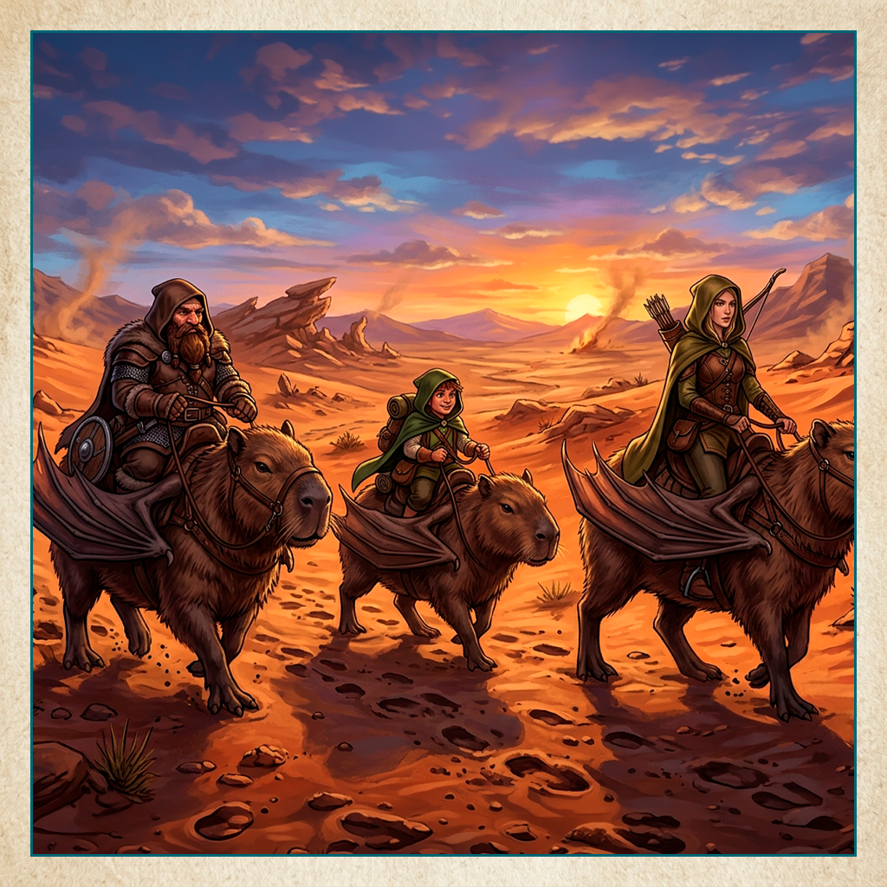
Domadores do Leste
No vasto deserto de Phantasia vivem os Domadores, um grupo singular de estudiosos que desenvolveu uma relação profunda e incomum com a fauna local. Mais do que caçadores ou pastores, eles se dedicam a compreender as criaturas do deserto em seus mínimos detalhes, estudando seus hábitos, instintos e até suas respostas à magia. Com o tempo, esse conhecimento evoluiu para algo maior: a capacidade de não apenas coexistir com essas criaturas, mas de influenciá-las, guiá-las e, em certos casos, submetê-las à sua vontade.
Criaturas gigantescas e perigosas tornam-se montarias, guardiões ou ferramentas vivas, criando uma cultura onde o respeito e o domínio caminham lado a lado.
Vistos com admiração pelo restante do Reinado, os Domadores do Leste são considerados mestres de um conhecimento capaz de transformar o próprio deserto em aliado ou em uma força devastadora contra seus inimigos.
Sua marca registrada são suas montarias: as capivaras de fogo aladas. Apesar de raras e dificílimas de serem domadas, um bom número pode ser encontrado com esse grupo.
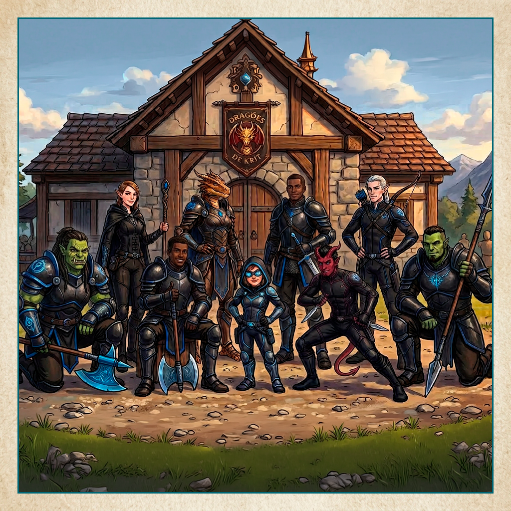
Dragões de Krit
Dominic Krit foi um dos mais corajosos e ousados comandantes de tropa do Reinado durante a Guerra do Lich, e seus homens eram conhecidos como os Dragões. Todos morreram em uma batalha nas Fronteiras,
Em sua homenagem foi criada a "Dragões de Krit", uma prestigiada força de elite de Phantasia, respondendo diretamente às ordens do Rei e da Rainha. Seus membros são escolhidos entre os melhores do Reinado, especialistas que demonstram não apenas habilidade excepcional, mas lealdade inquestionável à coroa.
Seu treinamento é rigoroso e implacável. Onde os Dragões de Krit são enviados espera-se eficiência, precisão e resultados.
Seu nome é associado a feitos lendários e missões quase impossíveis, muitas vezes mantidas em segredo do próprio povo. Atuando tanto em conflitos diretos quanto em operações discretas, eles lidam com crises que exigem mais do que força bruta.
Fazem parte dos Dragões hoje:
Comandante K'alesha Luminaluz, uma guerreira draconiana meio-elfa conhecida por ser tão dura quanto divertida.
Sulana Joara, clériga meia-elfa especialista em suporte.
Daroh't Thua, caçador elfo especialista em combate à distância e infiltração.
Melissa Serpentina, uma hobbit ladina especialista em infiltração, disfarce e espionagem.
Davi Roberto Ligiero, ladino tiefling especialista em extração de bens e pessoas.
Paulo Lataniel, guerreiro humano que se especializou em estratégia.
Saulo "Guaxinim" Lataniel, irmão gêmeo de Paulo, guerreiro que também treinou com os bárbaros de Koh Tal.
Kahmor Punholeve, monge meio-orc treinado em combate corpo-a-corpo.
Samira "Mastodonte" Denterubro, uma orc bárbara exilada de Koh Tal.
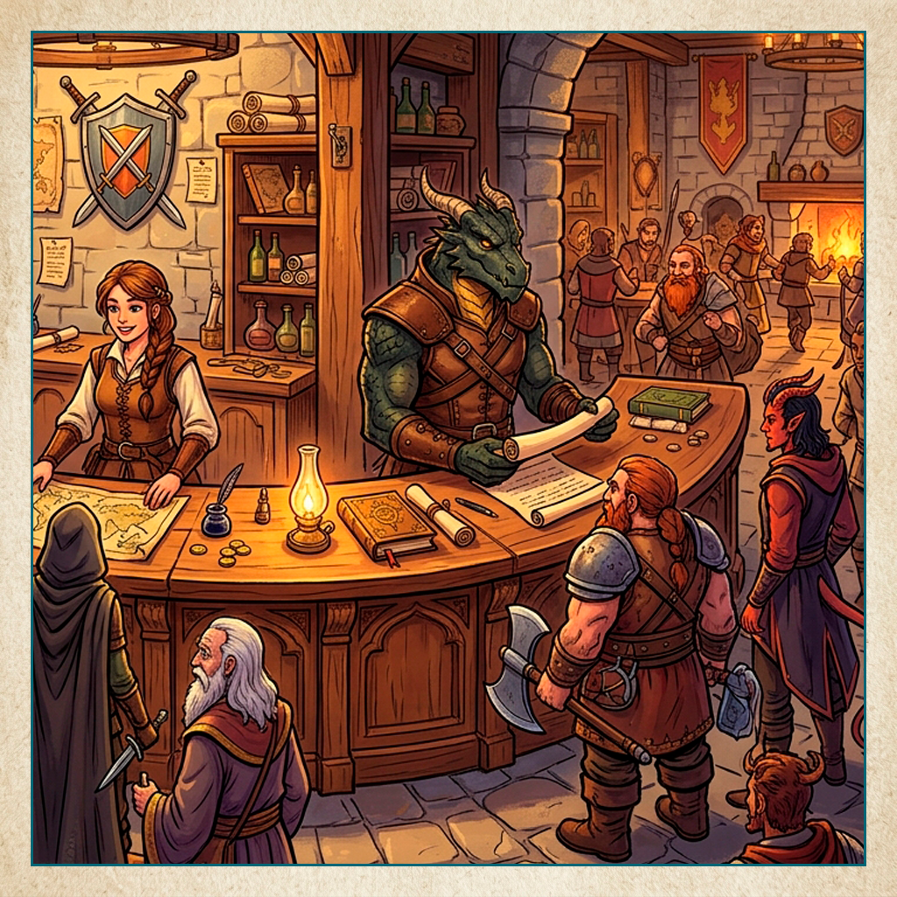
Guilda de Aventureiros
A Guilda de Aventureiros surgiu como uma iniciativa para trazer ordem a um dos elementos mais caóticos e essenciais de Phantasia: os próprios aventureiros. Criada com o objetivo de organizar grupos independentes, ela funciona como ponto de encontro, contratação e suporte, conectando exploradores a trabalhos que vão desde simples escoltas até missões de alto risco envolvendo monstros, ruínas antigas e ameaças ao Reinado.
Em suas sedes, espalhadas pelas principais cidades, é possível encontrar quadros de missões, registros de feitos, treinamento básico e até mediação de conflitos entre grupos rivais. Tudo por uma pequena taxa, é claro.
Apesar de sua proposta estruturada, a guilda ainda lida com a natureza indomável daqueles que a compõem. Muitos aventureiros veem suas regras como sugestões, e não obrigações, o que cria uma dinâmica única entre disciplina e liberdade.
Ainda assim, a Guilda se tornou uma peça fundamental no funcionamento do reino, sendo frequentemente utilizada por nobres, comerciantes e até pela coroa para lidar com problemas que exércitos convencionais não conseguem resolver. Entre histórias de glória e fracasso, ela representa tanto oportunidade quanto perigo.
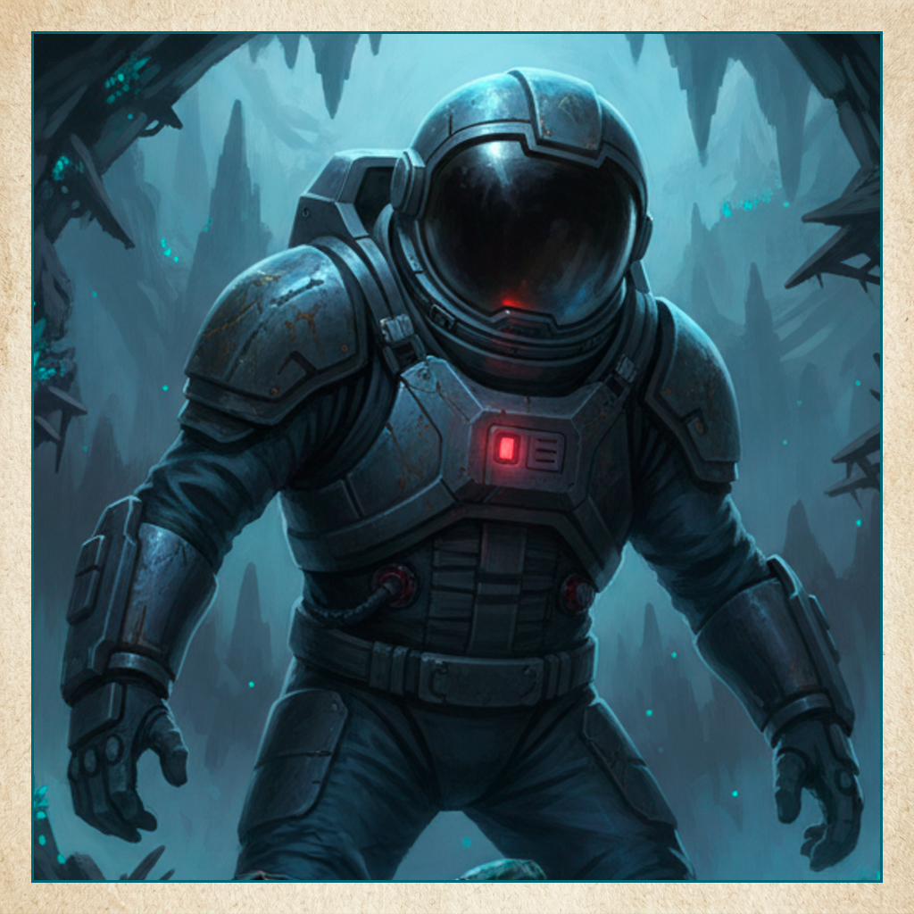
Kha-duat Yahlée
Kha-duat Yahlée é o nome dado aos vinte e cinco sobreviventes da queda de uma nave alienígena chamada Kha-duat, que significa algo próximo de “nossa esperança” na língua desses visitantes.
Após o impacto, esses seres passaram a viver nas sombras, escondidos em uma rede de túneis esquecidos entre a Floresta Negra e a Cidade Soterrada. Isolados, cautelosos e deslocados, eles evitam qualquer contato direto com os povos do Reinado, mantendo sua existência envolta em segredo absoluto.
Apesar disso, não estão indefesos. A yahlée (tripulação) ainda possui diversas tecnologias da nave, que operam sob princípios completamente desconhecidos para a magia local. Esses dispositivos lhes garantem sobrevivência e proteção.
Um desses dispositivos é, inclusive, um canhão de fótons que pode destruir cavalaria e todas as vilas e fazendas ao redor em segundos, deixando uma cratera fumegante no lugar.
Sua intenção é, por meio das tecnologias e aprendizado da magia local, consertar sua nave e voltar para casa.
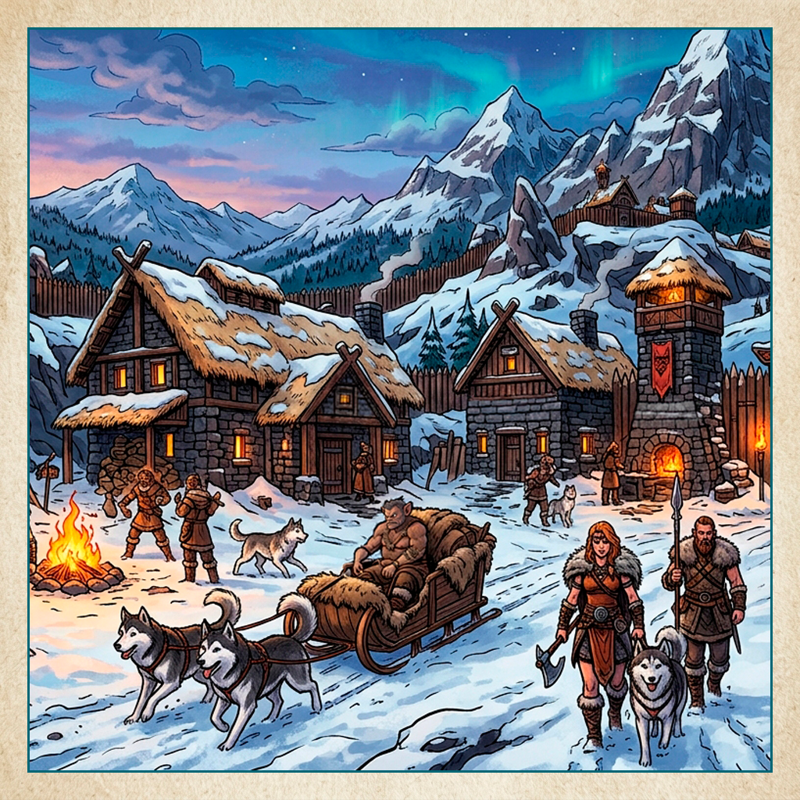
Koh Tal
Na língua antiga que os bárbaros de Phantasia ainda usam, Koh Tal significa “Sangue Frio”. Moldados por um ambiente cruel, onde o frio constante e as tempestades definem o ritmo da vida, esse povo desenvolveu uma cultura baseada na resistência, na lealdade e na força coletiva.
Não são considerados maus, mas tampouco são hospitaleiros: estrangeiros são vistos com desconfiança, e qualquer ameaça é respondida com rapidez e brutalidade. Para eles, sobreviver não é uma escolha, é uma obrigação.
Possuem códigos de honra profundos e tradições antigas que valorizam a palavra, a coragem e o respeito aos ancestrais. Seus líderes não governam apenas pela força, mas pelo exemplo, e cada membro da tribo tem um papel essencial na sobrevivência do grupo.
Embora raramente se envolvam nos assuntos do restante do Reinado, quando o fazem é com propósito claro e determinação inabalável. Para aqueles que conseguem conquistar sua confiança, os bárbaros de Koh Tal podem se tornar aliados poderosos. Mas ganhar esse respeito é um desafio tão difícil quanto sobreviver ao próprio inverno eterno do norte.
Koh Tal cria uma raça de lobos domesticados que eles chama de husky, praticamente cães domésticos mais fortes e barulhentos. Praticamente toda criança em Phantasia já quis ter um.
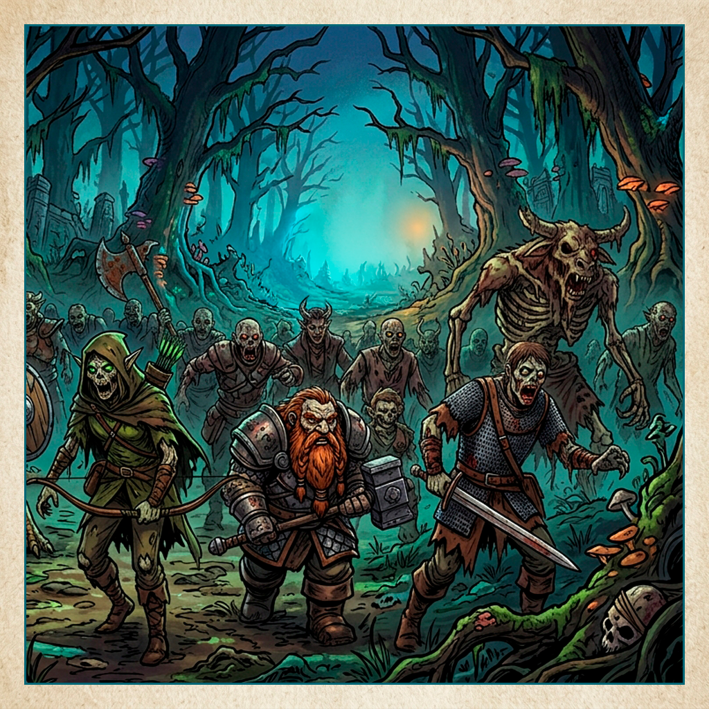
Legião Cinza
A Legião Cinza é o nome dado aos mortos-vivos que servem ao lich Maniel, vistos vagando pela Floresta Negra e patrulhando as temidas Fronteiras que cercam o Castelo Sinistro. Seu nome vem do tom acinzentado e sem vida de sua pele.
Relatos indicam que a Legião não se limita a guardar, vigiar ou atacar, mas também executa tarefas desconhecidas, como transportar artefatos ou interceptar comboios.
No geral, os mortos-vivos retém as habilidades e características que possuíam quando vivos, inclusive poder mágico (drasticamente reduzido), fala e algum nível de inteligência e consciência primitivas. Podem obedecer ordens e realizar tarefas complexas.
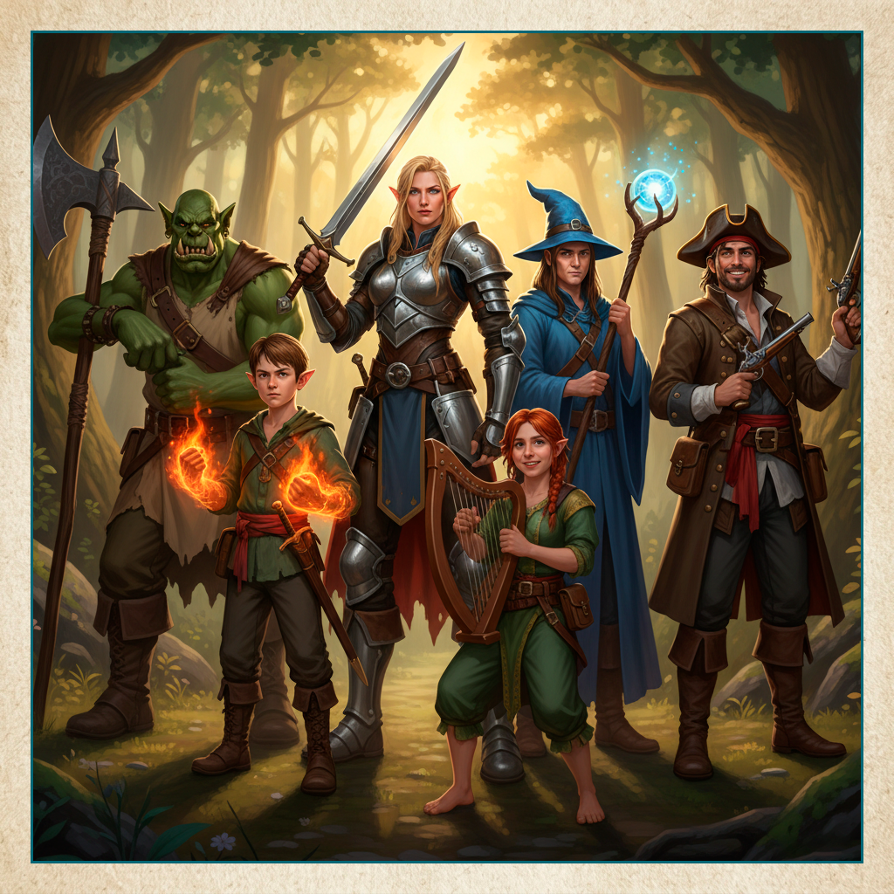
Quatrocinco
Os “Quatrocinco” (que são seis) não é um nome oficial, é como o povo de Phantasia passou a se referir ao grupo de aventureiros que mais se destacou durante a Guerra do Lich. Formado inicialmente por Thar, Jonatas Corvo, Gëra MacViking e Marvelus Mercurium, o grupo rapidamente se tornou símbolo de resistência, acumulando vitórias improváveis contra forças que muitos julgavam invencíveis.
Com o tempo, Ulfric, ainda criança, passou a lutar ao lado dos pais, trazendo uma nova vitalidade aos combates; e Laminia Ventorubro juntou-se a eles, como a cronista que registrava cada passo de suas histórias.
Eles se tornaram lendas vivas, um ponto de esperança em meio ao desespero da guerra. Juntos criaram feitos que até hoje são contados em tavernas e salões nobres ou em histórias épicas para crianças. Ainda assim, há muitas versões dessas histórias, e nem todas concordam entre si, o que apenas reforça o caráter quase mítico do Quatrocinco.
Entre as histórias mais celebradas estão:
A Queda de Frosthold: Quando o Quatrocinco liderou uma incursão ousada ao pico do Monte Inverno, derrubando a fortaleza do Lich que controlava os demônios do gelo e libertando a região do norte.
O Resgate da Orbe da Luz: Em uma missão que parecia impossível, o grupo penetrou no labirinto sombrio de Ouroboros e recuperou a Orbe da Luz, a única arma capaz de dispersar as névoas negras que encobriam Phantasia em uma noite eterna. Foi nessa missão que uma bruxa amaldiçoou Corvo, depois de ele ter acertado um tiro incrível que removeu o Orbe das mãos dela.
A Defesa de Lum'ya Lörén: Durante dias, o Quatrocinco segurou sozinho o cerco à cidade élfica de Lum'ya Lörén contra as hordas de mortos-vivos, garantindo tempo para que os elfos evacuassem sua população. Marvelus usou magias de área destrutivas como o mundo nunca viu (ficando tão exausto que dormiu por mais de uma semana depois), e Gëra e Thar empilharam corpos até o céu.
O Cerco à Cavalaria: Jonatas Corvo entrou sozinho no Castelo Cavalaria conquistado pelas forças de Maniel, passou 3 dias lá dentro escondido e eliminou furtivamente um necromante servo do Lich que controlava aquelas forças ali. Tudo isso enquanto Ulfric e Marvelus mantinham uma barreira mágica que impedia que os mensageiros saíssem.
Após a guerra cada um seguiu seu rumo: Thar desapareceu no norte gelado, Jonatas voltou para os mares do sul, Gëra fundou os Vândalos, Marvelus se isolou na sua torre, Ulfric equilibra seu tempo entre as aventuras com a mãe e os estudos com o pai, e Laminia viaja pelo reino contando histórias.
Os jovens Quatrocinco na época da Guerra.
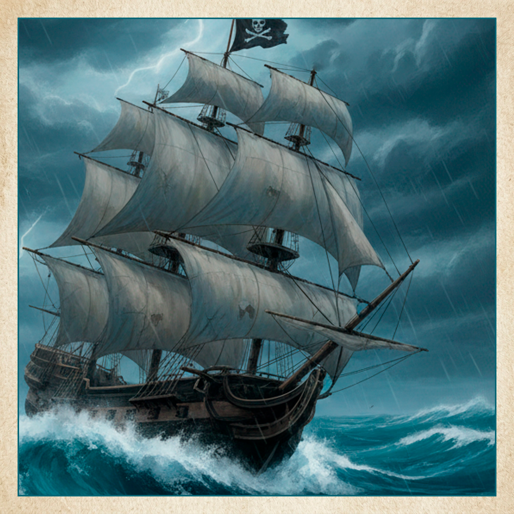
Rubi Verde
Mais do que apenas um navio, o Rubi Verde é uma lenda viva dos mares de Phantasia, e sua tripulação carrega o mesmo peso de reputação que seu capitão, Jonatas Corvo.
Embora não seja uma organização formal, os que navegam sob sua bandeira formam um grupo coeso, unido por lealdade, respeito mútuo e um código próprio que rege suas ações. Cada membro da tripulação possui habilidades únicas, desde navegadores até combatentes e especialistas em infiltração, tornando o Rubi Verde uma força versátil e imprevisível nos mares e portos do reino.
Diferente de muitos piratas, a tripulação segue a filosofia de seu capitão, escolhendo cuidadosamente seus alvos e evitando atacar inocentes, o que lhes rendeu uma reputação ambígua: criminosos para alguns, justiceiros para outros. A bordo, há uma hierarquia clara, mas também um senso de camaradagem raro, onde cada conquista é compartilhada e cada perda é sentida.
Histórias sobre o Rubi Verde falam de manobras impossíveis, fugas milagrosas e confrontos ousados contra forças muito maiores, feitos que transformaram o navio e sua tripulação em símbolos de liberdade, desafio e aventura nos mares de Phantasia.
 Vândalos
Vândalos
Os Vândalos são vários pequenos grupos de exploradores, mercenários, corsários, aventureiros e foras-da-lei unidos sob códigos de conduta e a liderança de Gëra McViking. Não são exatamente uma guilda, mas podem ser um exército formidável quando unidos sob um mesmo objetivo. São, em resumo, uma irmandade frouxa de indivíduos que aprenderam que, em Phantasia, sobreviver sozinho pode ser muito mais difícil e muito menos lucrativo.
Eles atuam por toda Phantasia, mas se estabelecem nas regiões costeiras, onde seus navios, contatos e conhecimentos das rotas marítimas lhes garantem uma vantagem considerável. Alguns subgrupos atuam como mercadores e exploradores respeitáveis; outros vivem de saques, contrabando, caça a tesouros ou trabalhos que seriam considerados pouco recomendáveis (ou seguros) por qualquer autoridade civil.
Há ainda aqueles que simplesmente preferem a liberdade de uma vida sem senhores, reis ou burocratas dizendo-lhes onde podem ir e o que podem fazer.
O Hall do Hidromel, atrás dos fiordes de Phantasia, é o seu ponto de encontro e lar de Gëra. O lugar é mais do que uma simples taverna: é o coração dos Vândalos. O Hall foi construído em madeira escura e pedra bruta, aproveitando parte das fundações de uma antiga construção que existia na região muito antes da chegada dos Vândalos. Seus salões são largos o bastante para acomodar tripulações inteiras, e suas paredes estão cobertas por mapas, armas, bandeiras, troféus de expedições e lembranças de lugares que muitos habitantes de Phantasia sequer acreditam existir.
A elfa é a figura que mantém os Vândalos unidos e, para muitos, a única razão pela qual grupos tão distintos conseguem coexistir sob uma mesma bandeira. Sua palavra possui um peso que nenhum título oficial poderia comprar, e sua reputação é conhecida no continente todo.
Cada grupo possui seus próprios líderes, costumes e códigos de conduta. Um bando pode se dedicar à exploração de ruínas antigas, enquanto outro prefere o comércio marítimo; uma tripulação pode aceitar trabalhos de escolta, enquanto outra ganha a vida saqueando navios de nobres. Os Vândalos não exigem que todos sejam iguais. Exigem apenas que respeitem determinadas regras. No geral, porém, todos respondem ao comando de Gëra e usufruem do peso de seu nome. Essa estrutura oferece vantagens consideráveis.
E claro que manchar o nome dela traz repercursões bem pesadas... Na realidade, quase 100% dos Vândalos vai levar para o pessoal uma ofensa à elfa ou ao conjunto da comunidade.
Um grupo ameaçado por uma força muito maior pode pedir auxílio aos demais. Informações, rotas, contatos e oportunidades de trabalho circulam constantemente entre os diferentes bandos.
Recentemente alguns grupos entraram em conflito direto com as fadas da ilha ao norte. Ele têm realizado incursões cada vez mais ousadas na Ilha das Fadas, explorando, coletando e, em muitos casos, saqueando elementos mágicos da região. Para eles, trata-se de uma oportunidade única de obter poder e conhecimento; para as fadas, uma violação grave de seu território sagrado.
E lembre-se: você pode ser um canalha. Pode ser um ladrão. Pode ser um pirata, mercenário ou fora-da-lei. Mas não seja um babaca com outro Vândalo.